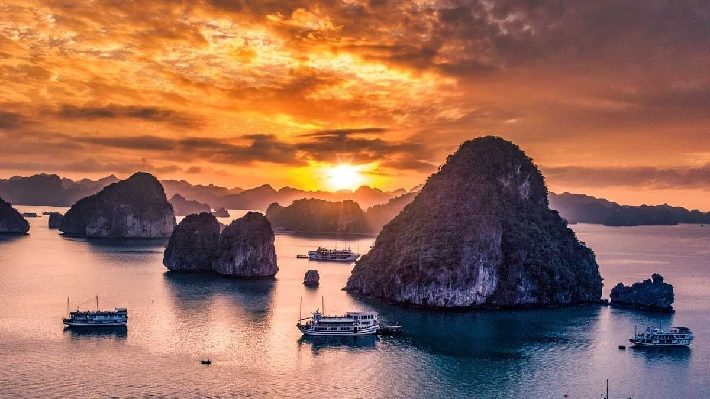
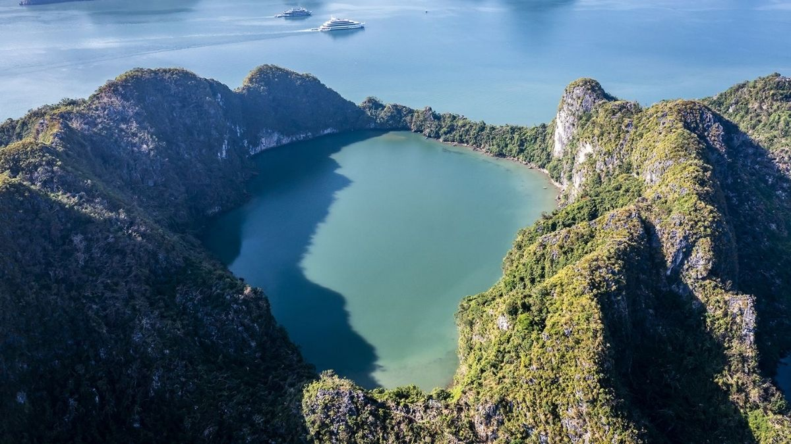

Vẻ đẹp thiên nhiên



Vịnh Hạ Long là một trong những danh thắng nổi tiếng nhất Việt Nam, nằm tại tỉnh Quảng Ninh. Với hàng nghìn đảo đá vôi lớn nhỏ cùng hệ thống hang động kỳ vĩ, nơi đây được UNESCO công nhận là Di sản Thiên nhiên Thế giới.
Vịnh Hạ Long nằm ở phía Đông Bắc Việt Nam, thuộc tỉnh Quảng Ninh, cách thủ đô Hà Nội khoảng 170 km. Vịnh có diện tích hơn 1.500 km² với gần 2.000 hòn đảo lớn nhỏ.
Nơi đây nổi tiếng với cảnh quan thiên nhiên độc đáo được hình thành qua hàng triệu năm kiến tạo địa chất. Những đảo đá mang hình thù đặc biệt như Hòn Gà Chọi, Hòn Đỉnh Hương đã trở thành biểu tượng của du lịch Việt Nam.
UNESCO công nhận
Đảo đá
Diện tích